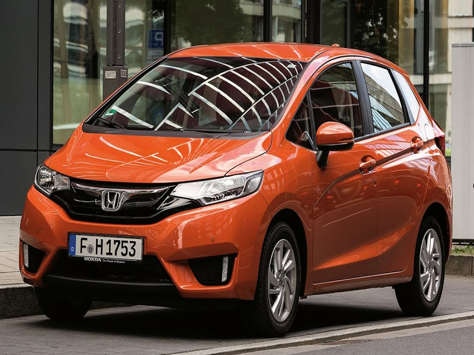
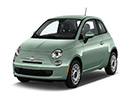
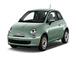

Honda Jazz
Technical characteristics: engine power - 102 hp, engine capacity - 1.3 cm3, gearbox - 5/6 speeds manual/automatic, max speed - 182 km/h, rack steer, fuel type & consumption - multi-point injection 5.3 litres/100 km (urban), fuel tank capacity - 40 litres, boot - 354 litres, length - 4.995 m, front and side airbags, beginning price - 103.900 NIS.


 
